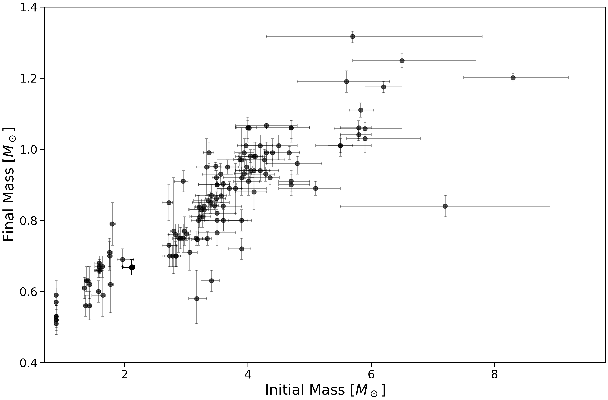

Open Cluster White Dwarf Initial-Final Mass Relation
Welcome to WDIFMR.org, a maintained resource for empirical open-cluster white dwarf initial-final mass relation measurements. The current release includes published white dwarf atmospheric parameters, masses, cooling ages, progenitor masses, host-cluster information, supporting references, downloadable documentation, and figures.
The database will continue to expand as new results become available. Corrections, suggestions for additional datasets, and recommendations for useful tools or features are welcome at drmiller@phas.ubc.ca.

{kind=link}
IFMR
The current release includes white dwarf and host-cluster identifiers, atmospheric classifications, cluster properties, white dwarf masses and cooling ages, inferred progenitor masses, uncertainties, quality information, and relevant references. Full definitions and methodological details are provided in the accompanying README.
Last updated: July 22, 2026
Acknowledgement
If you use our IFMR tables in your work, please acknowledge this website (https://wdifmr.org) and cite the relevant publications associated with any used data. The latest release uses results from Miller et al. 2026a (2026ApJ...996...69M) and Miller et al. 2026b (ADS link forthcoming).
Planned additions
Future additions will include Python implementations of our recommended fitted relation and commonly used literature IFMRs, plotting and analysis utilities, updated data releases, and other tools for applying the IFMR.